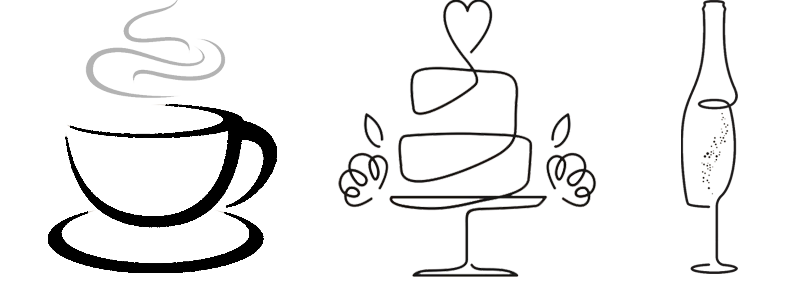

Loading countdown...

Velkommen til vores bryllupsside.
Vielsen
Hvad siger biblen?
Den, der finder en hustru, finder lykken og får en nådegave fra Herren.
Ordsprogenes Bog 18:22
Kaffe, kage og fest

Umiddelbart efter vores kirkelige splejsning vil der blive serveret kaffe og kage samt det der er stærkere på Ho Kro kun 200 m fra kirken. Hvis man ønsker at overnatte ved Ho Feriecenter er det også et oplagt tidspunkt at tjekke ind. Der vil være forskellige små spil man kan fornøjelse med, da flere af os jo kommer fra det sydjyske og ikke Nødvendigvis er de bedste til at samtale.

Når eftermiddagen begynder at gå imod aftenen vil vi sætte os til bords inde på kroen, hvor der vil blive serveret både vådt og tørt. Senere ryddes bordene og der vil blive budt op til dans.